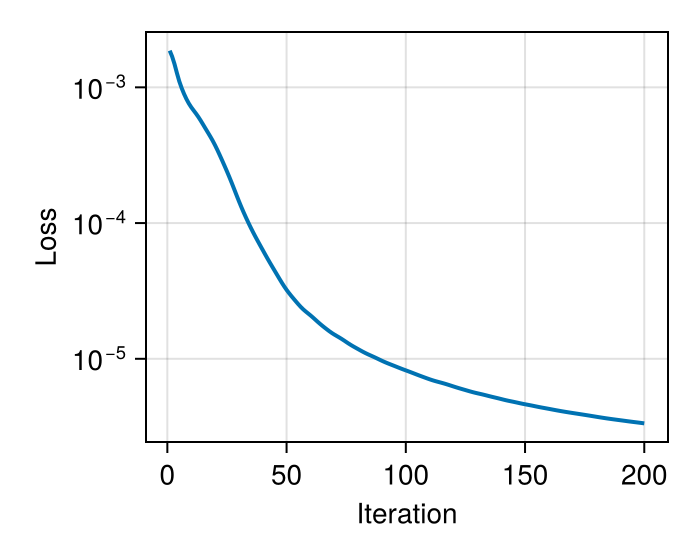
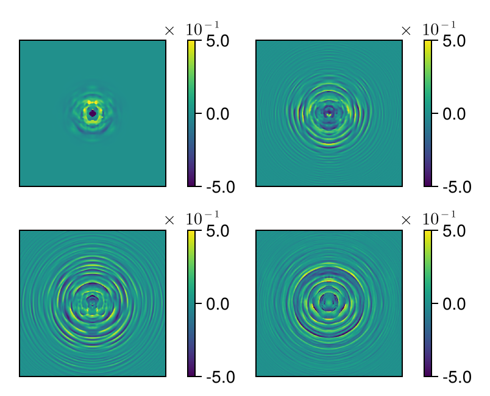
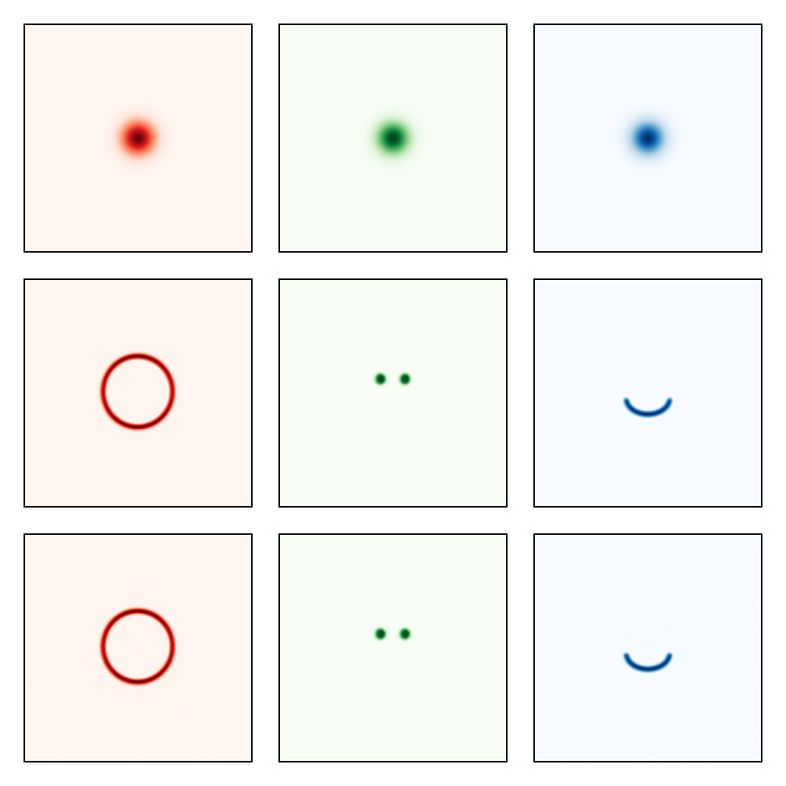

Multi-Wavelength Beam Shaping: RGB Smiley Generation
This tutorial demonstrates chromatic beam shaping using a cascade of diffractive optical elements (DOEs). We optimize four DOEs to transform three Gaussian beams (red, green, blue) into a color smiley face pattern: red head, green eyes, blue mouth.
Chromatic DOE Design
Each DOE introduces wavelength-dependent phase shifts through height modulation. By cascading multiple DOEs with propagation between them, we can independently control the spatial distribution of each wavelength, enabling complex multi-color beam shaping.
using FluxOptics, Zygote, CairoMakieTarget Images
We load three grayscale target patterns that define the desired intensity distribution for each color channel. The images are padded to avoid edge effects during propagation and normalized to unit power.
using Images
data = "docs/literate/data"
function pad_0(u, n)
nx, ny = size(u)
A = zeros(eltype(u), (nx + 2*n, ny + 2*n))
A[(n + 1):(n + nx), (n + 1):(n + ny)] .= u
A
end
n_pad = 100;Load and normalize target patterns
I_head = pad_0(Float32.(load("$(data)/smiley_600x600_head.png")[end:-1:1, 1:end]'), n_pad)
I_head .-= minimum(I_head)
I_head ./= sum(I_head)
I_mouth = pad_0(Float32.(load("$(data)/smiley_600x600_mouth.png")[end:-1:1, 1:end]'), n_pad)
I_mouth .-= minimum(I_mouth)
I_mouth ./= sum(I_mouth)
I_eyes = pad_0(Float32.(load("$(data)/smiley_600x600_eyes.png")[end:-1:1, 1:end]'), n_pad)
I_eyes .-= minimum(I_eyes)
I_eyes ./= sum(I_eyes);Composite target (grayscale visualization)
visualize(4*I_head .+ I_eyes .+ I_mouth, identity; colormap=:grayC, height=120)Multi-Wavelength Source
We create a multi-wavelength field with three Gaussian beams at blue (455nm), green (538nm), and red (640nm). The wavelength-dependent refractive index of the DOE material (n ≈ 1.51) enables chromatic control.
ns = size(I_head)
ds = (0.5, 0.5)
x_vec, y_vec = spatial_vectors(ns, ds)
λ_455 = 0.455 # Blue
λ_538 = 0.538 # Green
λ_640 = 0.640; # RedRefractive index dispersion (typical optical glass)
function dn(λ::T) where {T}
return if λ == T(0.455)
T(1.518 - 1)
elseif λ == T(0.538)
T(1.512 - 1)
elseif λ == T(0.640)
T(1.508 - 1)
else
T(NaN)
end
end
lambdas = [λ_640, λ_538, λ_455]
w0_640 = 40.0
w0_538 = 40.0
w0_455 = 40.0;Create multi-wavelength field
u0 = ScalarField((ns..., 3), ds, lambdas)
u0[:, :, 1] .= 2*Gaussian(w0_640)(x_vec, y_vec) # Red (2× power)
u0[:, :, 2] .= Gaussian(w0_538)(x_vec, y_vec) # Green
u0[:, :, 3] .= Gaussian(w0_455)(x_vec, y_vec); # BlueCombined target intensity (RGB channels)
If = cat(4*I_head, I_eyes, I_mouth, dims = 3)Visualize initial beams and targets
visualize((vec(u0), vec(sqrt.(If), 2)), intensity;
colormap=((:Reds, :Greens, :Blues),), height=120)
Optical System: DOE Cascade
The system consists of four trainable DOEs separated by 3mm free-space propagation. Each DOE applies wavelength-dependent phase shifts through height modulation. The optimization will find the height profiles that transform the input Gaussians into the target smiley pattern.
z = 3000.0 # 3mm propagation between DOEs
p = RSProp(u0, z; use_cache = true)
doe() = TeaDOE(u0, dn; trainable = true, buffered = true)
s = ScalarSource(u0)
system = s |> p |> doe() |> p |> doe() |> p |> doe() |> p |> doe() |> p |>
(; inplace = true);Loss Function and Optimization
We minimize the squared intensity difference between the output and target patterns across all three wavelengths. The DOE heights are constrained to [-0.5, 0.5] μm to maintain reasonable fabrication requirements.
intensity_diff = SquaredIntensityDifference((u0, If))
f_opt = m -> sum(intensity_diff(m().out));Initialize DOEs to zero height
masks = filter(x -> isa(x, TeaDOE), get_components(system))
for mask in masks
fill!(mask, 0)
endFISTA with height clamping
rule = Fista(200)
prox = ClampProx(-0.5, 0.5)
opt = FluxOptics.setup(ProxRule(rule, prox), system)Optimization Loop
We run 200 iterations of FISTA. The optimization simultaneously shapes all three wavelengths, finding DOE height profiles that satisfy the chromatic constraints.
losses = Float64[]
for i in 1:200
val, grads = Zygote.withgradient(f_opt, system)
FluxOptics.update!(opt, system, grads[1])
push!(losses, val)
endConvergence curve shows steady decrease in loss as the DOEs learn to shape the multi-wavelength beam into the target smiley pattern.

Optimized DOE Height Profiles
The four optimized DOEs show complex height profiles that enable independent control of each wavelength. The height structures differ between DOEs as each contributes to the cumulative transformation through the cascade.
visualize((masks[1:2], masks[3:4]), identity; show_colorbars=true, height=120)
Result: RGB Smiley
The final output shows successful chromatic beam shaping. Each wavelength forms its target pattern: red forms the head, green forms the eyes, and blue forms the mouth. The color separation demonstrates precise wavelength- dependent control achieved through the optimized DOE cascade.
uf = system().out
visualize((vec(u0), vec(sqrt.(If), 2), vec(uf)), intensity;
colormap=((:Reds, :Greens, :Blues),), height=120)
The optimization successfully generates a multi-color smiley face through wavelength-dependent diffractive beam shaping. This demonstrates the capability of cascaded DOEs for complex chromatic control, with applications in color holography, multi-wavelength optical systems, and achromatic/polychromatic designs.
This page was generated using Literate.jl.